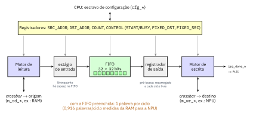
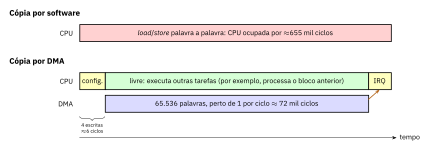

Memória e DMA¶
Espaço de Endereçamento¶
A arquitetura RV32I define um espaço de endereçamento linear de 32 bits, resultando em 4 GB (2³² bytes) de memória virtualmente endereçável. Este espaço é dividido em regiões distintas para memórias e periféricos, seguindo o modelo de Memory-Mapped I/O (MMIO) onde cada dispositivo é acessado através de endereços de memória específicos.
A organização deste espaço segue as convenções da especificação RISC-V, onde as regiões de memória principal (ROM e RAM) ocupam os extremos inferiores e superiores do mapa, enquanto os periféricos de I/O são mapeados em uma região intermediária.
Mapa de Endereços do SoC¶
A tabela abaixo apresenta o mapa de endereçamento completo do SoC, detalhando cada região de memória e periférico:
| Nome | Endereço Base | Endereço Final | Tamanho | Descrição |
|---|---|---|---|---|
| Boot ROM | 0x0000_0000 |
0x0000_0FFF |
4 KB | Memória apenas de leitura de inicialização (bootloader) |
| Reservado | 0x0000_1000 |
0x07FF_FFFF |
~128 MB | Espaço não utilizado |
| UART | 0x1000_0000 |
0x1000_FFFF |
64 KB | Controlador UART (comunicação serial) |
| GPIO | 0x2000_0000 |
0x2000_FFFF |
64 KB | Pinos de entrada/saída geral |
| VGA | 0x3000_0000 |
0x3001_FFFF |
128 KB | Controlador de vídeo (VRAM) |
| DMA | 0x4000_0000 |
0x4000_FFFF |
64 KB | Controlador DMA |
| CLINT | 0x5000_0000 |
0x5000_FFFF |
64 KB | Core Local Interrupt Controller |
| PLIC | 0x6000_0000 |
0x6003_FFFF |
256 KB | Platform-Level Interrupt Controller |
| Cartão SD | 0x7000_0000 |
0x7000_000F |
16 B | Mestre SPI do slot de microSD (Cartão microSD) |
| RAM | 0x8000_0000 |
0x8003_FFFF |
256 KB | Memória RAM principal |
| Reservado | 0x8004_0000 |
0x8FFF_FFFF |
~255 MB | Espaço não utilizado |
| NPU | 0x9000_0000 |
0x9FFF_FFFF |
256 MB | Neural Processing Unit |
| UART2 | 0xA000_0000 |
0xA000_000F |
16 B | Segunda UART, no Pmod JA (UART2) |
Decodificação de Endereços¶
A decodificação de endereços é realizada no módulo bus_interconnect.vhd, que utiliza os bits mais significativos (31-28) do endereço de 32 bits para identificar qual periférico ou memória deve responder à requisição. Esta abordagem permite uma decodificação rápida e simples, utilizando apenas 4 bits para selecionar entre até 16 regiões distintas.
O código VHDL a seguir demonstra a lógica de decodificação implementada:
dmem_slv <= SLV_ROM when dmem_addr_i(31 downto 28) = x"0" else
SLV_UART when dmem_addr_i(31 downto 28) = x"1" else
SLV_GPIO when dmem_addr_i(31 downto 28) = x"2" else
SLV_VGA when dmem_addr_i(31 downto 28) = x"3" else
SLV_DMA when dmem_addr_i(31 downto 28) = x"4" else
SLV_CLINT when dmem_addr_i(31 downto 28) = x"5" else
SLV_PLIC when dmem_addr_i(31 downto 28) = x"6" else
SLV_SD when dmem_addr_i(31 downto 28) = x"7" else
SLV_RAM when dmem_addr_i(31 downto 28) = x"8" else
SLV_NPU when dmem_addr_i(31 downto 28) = x"9" else
SLV_NONE;
É importante observar que as regiões 0xB até 0xF não são utilizadas nesta implementação, servindo como espaço reservado para futuras expansões.
Memórias¶
O SoC dispõe de duas memórias principais: a Boot ROM, que armazena o código de inicialização, e a RAM principal, utilizada para execução de programas e armazenamento de dados.
Boot ROM¶
A Boot ROM é uma memória apenas de leitura que armazena o bootloader do sistema. Ela é inicializada durante a síntese com o conteúdo de um arquivo HEX externo.
Características Técnicas¶
| Parâmetro | Valor |
|---|---|
| Tamanho | 4 KB (2¹⁰ palavras de 32 bits) |
| Tipo | Dual-port sincronizada |
| Porta A | Fetch de instruções (IMem) |
| Porta B | Leituras de dados (DMem) |
| Inicialização | Carrega conteúdo de arquivo .hex |
Interface de Sinais¶
A Boot ROM oferece duas portas de leitura independentes, permitindo acessos simultâneos:
port (
clk : in std_logic;
-- Porta A: Dedicada ao Fetch (Instruções)
vld_a_i : in std_logic;
addr_a_i : in std_logic_vector(31 downto 0);
data_a_o : out std_logic_vector(31 downto 0);
rdy_a_o : out std_logic;
-- Porta B: Dedicada ao LOAD/STORE (Dados)
vld_b_i : in std_logic;
addr_b_i : in std_logic_vector(31 downto 0);
data_b_o : out std_logic_vector(31 downto 0);
rdy_b_o : out std_logic
);
Inicialização via Arquivo¶
A ROM é inicializada através da função init_rom_from_file, que lê um arquivo no formato HEX:
impure function init_rom_from_file(file_name : string) return t_rom is
file f : text open read_mode is file_name;
variable l : line;
variable v_data : std_logic_vector(31 downto 0);
variable v_rom : t_rom := (others => (others => '0'));
begin
for i in 0 to (2**ADDR_WIDTH)-1 loop
exit when endfile(f);
readline(f, l);
hread(l, v_data);
v_rom(i) := v_data;
end loop;
return v_rom;
end function;
A síntese em FPGA utiliza atributos específicos do Vivado (Xilinx) para forçar a inferência de Block RAM:
- O atributo
ram_styleé uma sintaxe específica para síntese via Vivado da Xilinx - O valor
"block"força a utilização de BRAM (Block RAM) ao invés de distribuição (LUT RAM) - A utilização de BRAM adiciona latência de 1 ciclo de clock à leitura de dados (referência: UG473 - 7 Series Memory Resources)
RAM Principal¶
A RAM principal é uma memória de leitura e escrita utilizada para armazenamento temporário de dados e código durante a execução do programa.
Características Técnicas¶
| Parâmetro | Valor |
|---|---|
| Tamanho | 256 KB (2¹⁶ palavras de 32 bits) |
| Tipo | Dual-port com BRAM inferida |
| Largura de dados | 32 bits |
| Escrita | Byte-a-byte (WE de 4 bits) |
| Índices de acesso | addr(17 downto 2) (palavras) |
Interface de Sinais¶
generic (
ADDR_WIDTH : integer := 16; -- 256 KB
DATA_WIDTH : integer := 32
);
port (
clk : in std_logic;
-- Porta A
vld_a_i : in std_logic;
we_a : in std_logic_vector((DATA_WIDTH/8)-1 downto 0);
addr_a : in std_logic_vector(ADDR_WIDTH-1 downto 0);
data_a_i : in std_logic_vector(DATA_WIDTH-1 downto 0);
data_a_o : out std_logic_vector(DATA_WIDTH-1 downto 0);
rdy_a_o : out std_logic;
-- Porta B
vld_b_i : in std_logic;
we_b : in std_logic_vector((DATA_WIDTH/8)-1 downto 0);
addr_b : in std_logic_vector(ADDR_WIDTH-1 downto 0);
data_b_i : in std_logic_vector(DATA_WIDTH-1 downto 0);
data_b_o : out std_logic_vector(DATA_WIDTH-1 downto 0);
rdy_b_o : out std_logic
);
Escrita Byte-a-Byte¶
A RAM suporta escrita em granularidade de byte através de um vetor de Write Enable:
for i in 0 to (DATA_WIDTH/8)-1 loop
if we_b(i) = '1' then
ram(to_integer(unsigned(addr_b)))(8*i+7 downto 8*i) := data_b_i(8*i+7 downto 8*i);
end if;
end loop;
Cada bit do vetor WE (4 bits para dados de 32 bits) controla um byte específico, permitindo escrita em 1, 2, 3 ou 4 bytes individualmente.
Relação com a LSU e Endianness¶
O Load Store Unit (LSU) é a unidade responsável por formatar os acessos à memória de dados. Ela decodifica o campo Funct3 das instruções para gerar os Byte Enables corretos:
| Instrução | Tamanho | Byte Enables |
|---|---|---|
SB |
1 byte | "0001", "0010", "0100" ou "1000" |
SH |
2 bytes | "0011" (bytes 0-1) ou "1100" (bytes 2-3) |
SW |
4 bytes | "1111" |
A LSU utiliza os bits menos significativos do endereço (addr(1:0)) para determinar qual byte escrever:
-- Store Byte: Seleção por endereço (little-endian)
case s_addr_lsb is
when "00" => DMem_we_o <= "0001"; -- Byte 0 (bits 7:0)
when "01" => DMem_we_o <= "0010"; -- Byte 1 (bits 15:8)
when "10" => DMem_we_o <= "0100"; -- Byte 2 (bits 23:16)
when "11" => DMem_we_o <= "1000"; -- Byte 3 (bits 31:24)
end case;
Este SoC utiliza endianness little-endian:
- Endereço com LSB=
00→ byte menos significativo (bits[7:0]) - Endereço com LSB=
11→ byte mais significativo (bits[31:24])
Essa arquitetura permite que o software escreva bytes individuais sem afetar os demais bytes da palavra, essencial para operações de strings e comunicação com periféricos.
Registradores de Periféricos via MMIO¶
Conceito: MMIO vs CSRs Internos do Core¶
Existem duas formas distintas de comunicação entre software e hardware neste SoC:
CSRs Internos do Core (RISC-V Privileged)¶
São registradores dentro do núcleo processador que controlam interrupções, traps e modo de execução. São acessados via instruções CSR dedicadas (csrrw, csrrs, csrrc) e ocupam um espaço de endereçamento separado de 12 bits (endereços 0x300-0x344). Esses registradores fazem parte da arquitetura RISC-V Privileged e são implementados no módulo csr_file.vhd.
Registradores de Periféricos via MMIO¶
São registradores fora do núcleo, mapeados no espaço de memória endereçável. Cada periférico expõe seus registradores de controle e dados em endereços específicos dentro do mapa de memória. O software acessa esses registradores usando instruções normais de load e store. Isso vai de encontro à filosofia básica de arquiteturas RISC.
Esta seção documenta os registradores MMIO dos periféricos. Para o tratamento de traps e interrupções em Machine Mode, consulte o Subsistema de Interrupções.
Arquitetura de Acesso a Periféricos¶
No SoC, periféricos são acessados como posições de memória através de Memory-Mapped I/O (MMIO):
| Intervalo de Endereço | Descrição / Periférico |
|---|---|
0x0000_0000 - 0x0FFF_FFFF |
Memórias (ROM) e Reservado |
0x1000_0000 |
UART |
0x2000_0000 |
GPIO |
0x3000_0000 |
VGA |
0x4000_0000 |
DMA |
0x5000_0000 |
CLINT |
0x6000_0000 |
PLIC |
0x7000_0000 |
Cartão SD (SPI) |
0x8000_0000 |
RAM |
0x9000_0000 |
NPU |
0xA000_0000 |
UART2 (Pmod JA) |
A CPU configura e lê periféricos usando instruções normais de memória:
// Escrita: configurar source address do DMA
DMA_SRC_ADDR = (uint32_t)buffer_src; // sw do compilador: store
// Leitura: verificar status da UART
status = UART_CTRL; // sw do compilador: load
BSP: Macros de Acesso¶
O Board Support Package (BSP) fornece macros para acesso volátil:
#define MMIO32(addr) (*(volatile uint32_t *)(addr))
#define MMIO8(addr) (*(volatile uint8_t *)(addr))
Note
A palavra-chave volatile garante que o compilador não otimize away acessos consecutivos ao mesmo endereço, essencial para registradores de status que mudam de valor.
Tabela Consolidada de Registradores MMIO¶
A seguir, todos os registradores mapeados em memória de cada periférico do SoC.
UART (0x1000_0000)¶
Controlador de comunicação serial UART.
| Offset | Nome | Acesso | Descrição |
|---|---|---|---|
0x00 |
DATA |
RW | Registrador de dados TX/RX |
0x04 |
CTRL |
RW | Registrador de controle e status |
Definições de bits do registrador CTRL:
#define UART_STATUS_TX_BUSY (1 << 0) // Transmissor ocupado
#define UART_STATUS_RX_VALID (1 << 1) // Dado RX disponível
#define UART_CMD_RX_POP (1 << 0) // Comando: remover dado
#define UART_CMD_RX_FLUSH (1 << 2) // Comando: limpar buffer
GPIO (0x2000_0000)¶
Portas de entrada/saída no estilo de microcontrolador (Pmods, LEDs, chaves e botões), displays de 7 segmentos e LEDs RGB. Detalhes em GPIO Controller.
| Offset | Bloco |
|---|---|
0x000 - 0x0FF |
Portas JA, JB, JC e JD (Pmods), 64 bytes cada |
0x100 |
Porta LED (LD0..LD15) |
0x140 |
Porta SW (SW0..SW15) |
0x180 |
Porta BTN (BTNU, BTND, BTNL, BTNR) |
0x200 |
Displays de 7 segmentos |
0x280 |
LEDs RGB (PWM) |
Registradores de cada porta: IN (0x00), OUT (0x04), DIR (0x08), OUTSET/OUTCLR/OUTTGL (0x0C/0x10/0x14), IE (0x18), IES (0x1C) e IFG (0x20).
VGA (0x3000_0000)¶
Controlador de vídeo VGA com frame buffer de 320x240 pixels.
| Offset | Nome | Acesso | Descrição |
|---|---|---|---|
0x00000 - 0x1FFFC |
FRAME_BUFFER |
RW | Pixels do frame buffer (24 bits/pixel) |
0x1FFFE |
VSYNC |
RW | Registrador de sincronização vertical |
CLINT (0x5000_0000)¶
Core Local Interrupt Controller - Gerencia interrupções de timer e software localmente.
| Offset | Nome | Acesso | Descrição |
|---|---|---|---|
0x00 |
MSIP |
RW | Machine Software Interrupt Pending |
0x08 |
MTIMECMP_LO |
RW | Timer Compare Low (32 bits inferiores) |
0x0C |
MTIMECMP_HI |
RW | Timer Compare High (32 bits superiores) |
0x10 |
MTIME_LO |
RW | Timer Value Low |
0x14 |
MTIME_HI |
RW | Timer Value High |
O timer de 64 bits é implementado como dois registradores de 32 bits, permitindo contagens superiores a 4 segundos a 100 MHz.
PLIC (0x6000_0000)¶
Platform-Level Interrupt Controller - Gerencia prioridades e roteamento de interrupções externas.
| Offset | Nome | Acesso | Descrição |
|---|---|---|---|
0x000000 |
PRIORITY |
RW | Prioridade das fontes de interrupção (escalável por ID) |
0x001000 |
PENDING |
RO | Bitmap de interrupções pendentes (bits 0-31) |
0x002000 |
ENABLE |
RW | Habilita interrupções por fonte |
0x200000 |
THRESHOLD |
RW | Limiar de prioridade (interrupções abaixo são ignoradas) |
0x200004 |
CLAIM |
RW | Claim: lê fonte; Complete: marca como tratada |
DMA (0x4000_0000)¶
Direct Memory Access Controller - Transferência de dados autônoma entre memória e periféricos.
| Offset | Nome | Acesso | Descrição |
|---|---|---|---|
0x00 |
SRC_ADDR |
RW | Endereço de origem (RAM) |
0x04 |
DST_ADDR |
RW | Endereço de destino (RAM ou periférico) |
0x08 |
COUNT |
RW | Número de palavras de 32 bits a transferir (lido, as que faltam escrever) |
0x0C |
CONTROL |
RW | Bits de controle e status |
Bits do registrador CONTROL:
| Bit | Escrita | Leitura | Descrição |
|---|---|---|---|
| 0 | START |
BUSY |
Escrever 1 inicia a transferência; lido, indica transferência em andamento |
| 1 | FIXED_DST |
FIXED_DST |
1 = destino fixo (porta de periférico, como as da NPU); 0 = o destino avança 4 bytes por palavra |
| 2 | FIXED_SRC |
FIXED_SRC |
1 = origem fixa (por exemplo, a porta de saída da NPU); 0 = a origem avança 4 bytes por palavra |
Cartão SD (0x7000_0000)¶
Mestre SPI do slot de microSD - Transfere bytes com o cartão; os comandos do cartão ficam no software (o bootloader usa o cartão para guardar um programa).
| Offset | Nome | Acesso | Descrição |
|---|---|---|---|
0x00 |
DATA |
RW | Escrita: envia um byte; leitura: byte recebido |
0x04 |
CTRL |
RW | Bit 0 CS (cartão selecionado), bit 1 PWR (cartão alimentado) |
0x08 |
DIV |
RW | f_SCK = 100 MHz / (2 (DIV + 1)) |
0x0C |
STATUS |
RO | Bit 0 BUSY, bit 1 CD (cartão no slot) |
Detalhes em Cartão microSD.
NPU (0x9000_0000)¶
Neural Processing Unit - Acelerador de hardware para operações de redes neurais.
| Offset | Nome | Acesso | Descrição |
|---|---|---|---|
0x00 |
STATUS |
RO | Flags de status (BUSY, DONE, OUT_VLD) |
0x04 |
CMD |
WO | Comandos de controle (START, RST_PTRS) |
0x08 |
CONFIG |
RW | Dimensão K da matriz |
0x10 |
WRITE_W |
WO | Porta de escrita de pesos |
0x14 |
WRITE_A |
WO | Porta de escrita de ativações |
0x18 |
READ_OUT |
RO | Porta de leitura de resultados |
0x1C |
WRITE_IMG |
WO | Porta da imagem crua do im2col em hardware |
0x20 |
W_BASE |
RW | Base da região de pesos na RAM local (pesos residentes) |
0x24 |
I_BASE |
RW | Base da região de ativações na RAM local |
0x28 |
IM2COL_EN |
RW | 1 = ativações geradas pelo im2col em hardware |
0x2C |
IM2COL_GEOM |
RW | Geometria: IN_W, OUT_W, STRIDE, KW |
0x30 |
IM2COL_NWIN |
RW | Total de janelas da convolução |
0x0C |
DESC |
WO | Programa de descritores de camada (processador de comandos) |
0x34 |
TILES |
RW | Tiles por START, volta dos ponteiros à base, bias por tile e banco inicial de bias |
0x38 |
OUT_CFG |
RW | Formato da saída: linhas em ordem / uma ativação por palavra / LOOP (saída na RAM de Inputs) |
0x3C |
MODE |
RW | Bit 0 GEMV; bit 1 STREAM_I; bit 2 STREAM_W; bit 3 OVERLAP (tiles encadeados) |
0x40 |
QUANT_CFG |
RW | Configuração de quantização (shift, zero-point) |
0x44 |
QUANT_MULT |
RW | Multiplicador PPU |
0x48 |
FLAGS |
RW | Flags de controle (ReLU) |
0x80–0xFC |
BIAS |
RW | Banco de bias: 8 tiles × 4 colunas |
Bits de status (STATUS):
#define NPU_STATUS_BUSY (1 << 0) // Operação em andamento
#define NPU_STATUS_DONE (1 << 1) // Operação concluída
#define NPU_STATUS_OUT_VLD (1 << 3) // Saída válida disponível
Bits de comando (CMD):
#define NPU_CMD_RST_PTRS (1 << 0) // Reseta ponteiros internos
#define NPU_CMD_START (1 << 1) // Inicia execução
#define NPU_CMD_ACC_CLEAR (1 << 2) // Limpa acumuladores
#define NPU_CMD_ACC_NO_DRAIN (1 << 3) // Mantém resultado no array (tiling)
Controlador DMA¶
Gargalo de Desempenho: Transferência por Polling/Busy-Wait¶
O Problema da Cópia por Software¶
Quando o processador RISC-V executa uma cópia de memória via software (load/store em loop), cada palavra transferida consome ciclos de CPU que poderiam ser utilizados para outras tarefas. Para uma transferência de 256 KB (tamanho total da RAM principal):
Palavras de 32 bits em 256 KB = 262.144 / 4 = 65.536 palavras
Ciclos consumidos por iteração do loop (estimativa realista para multi-cycle):
├── LOAD do endereço fonte: ~3 ciclos (inclui wait states)
├── STORE no endereço destino: ~3 ciclos (inclui wait states)
├── Incremento de ponteiros: ~2 ciclos
└── Atualização de contador: ~2 ciclos
──────────
Total por palavra transferida: ~10 ciclos
Total para 256 KB: 65.536 × 10 ≈ 655.360 ciclos de CPU
Nota sobre Gargalo de Von Neumann (Memory Wall)
A arquitetura RV32I_Zicsr deste SoC é uma FSM multi-cycle (não pipeline), onde cada instrução consome múltiplos ciclos de clock. O memory wall (gargalo de von Neumann) é o fenômeno onde a velocidade da memória não acompanha a velocidade do processador, criando um limite de desempenho fundamental.
Nesta estimativa, consideramos ~3 ciclos por LOAD/STORE, representando wait states típicos em acessos à memória de dados (DMem) com o handshake vld/rdy.
Durante esses aproximadamente 655.000 ciclos, o processador fica indisponível para:
- Processamento de interrupções UART (podendo perder dados)
- Atualização de timers e agendamento
- Manipulação de outros periféricos
- Execução de lógica de aplicação
Impacto no Throughput do Sistema¶
| Cenário | Tempo (100 MHz) | Ciclos CPU | Utilização CPU |
|---|---|---|---|
| Cópia 256 KB via CPU (busy-wait) | 6,55 µs | 655.360 | 100% |
| Cópia 256 KB via DMA | ~0,65 µs (efetivo) | ~6 | 0% (livre) |
A CPU poderia utilizar esses ~655.000 ciclos economizados para:
- Processar ~3.000 interrupções UART (200 ciclos cada)
- Executar ~80.000 operações aritméticas inteiras
- Atender múltiplas requisições de software
Visão Geral do DMA¶
O Direct Memory Access (DMA) é um controlador que permite transferência de dados entre memória e periféricos sem intervenção do núcleo de processamento. Enquanto a CPU configura a transferência, o DMA executa a cópia de dados de forma autônoma, permitindo que o processador execute outras tarefas em paralelo.
O DMA deste SoC opera em modo 1D (linear), transferindo um bloco contíguo de palavras de 32 bits de uma região de memória para outra. A arquitetura dual-interface permite que o DMA seja simultaneamente slave (configurado pela CPU) e master (acesso autônomo ao barramento).
Microarquitetura do Controlador DMA¶
O DMA possui uma arquitetura dual-interface:
- Interface Slave (cfg_*): Utilizada pela CPU para configurar registradores de controle
- Interface Master (m_*): Utilizada para acessar o barramento de memória de forma autônoma

Registradores de Configuração¶
Estes registradores também estão na tabela consolidada. A configuração só é aceita com o DMA parado. Resumo:
| Offset | Nome | Tamanho | Descrição |
|---|---|---|---|
0x00 |
SRC_ADDR |
32 bits | Endereço de origem (RAM) |
0x04 |
DST_ADDR |
32 bits | Endereço de destino (RAM ou periférico) |
0x08 |
COUNT |
32 bits | Número de palavras de 32 bits a transferir |
0x0C |
CONTROL |
32 bits | Bits de controle e status |
Detalhamento do Registrador CONTROL¶
| Bit | Escrita | Leitura | Descrição |
|---|---|---|---|
| 0 | START |
BUSY |
Escrever 1 inicia a transferência; lido, indica transferência em andamento |
| 1 | FIXED_DST |
FIXED_DST |
1 = destino fixo (porta de periférico, como as da NPU); 0 = o destino avança 4 bytes por palavra |
| 2 | FIXED_SRC |
FIXED_SRC |
1 = origem fixa (por exemplo, a porta de saída da NPU); 0 = a origem avança 4 bytes por palavra |
Funcionamento¶
O DMA tem duas interfaces de mestre independentes, uma de leitura (m_rd_*) e uma de escrita (m_wr_*), ligadas entre si por uma FIFO interna de 32 palavras. Em vez de uma máquina de estados que alterna "lê uma palavra, escreve uma palavra", os dois lados trabalham ao mesmo tempo, como um produtor e um consumidor:
- Leitura (produtor): enquanto restam palavras a ler e há espaço na FIFO, o DMA mantém uma requisição de leitura ativa; cada palavra lida entra na FIFO no ciclo seguinte, por um estágio de entrada registrado, e a origem avança 4 bytes (ou fica fixa, com
FIXED_SRC). - Escrita (consumidor): sempre que a FIFO tem dado, um registrador de saída recebe a próxima palavra e a apresenta ao destino; a cada escrita confirmada, o destino avança 4 bytes (ou fica fixo, com
FIXED_DST). - Fim: quando a última palavra é escrita, o DMA baixa
BUSYe gera um pulso emirq_done_o, ligado ao PLIC.
Como origem e destino costumam ser escravos diferentes (a RAM e a NPU, por exemplo), a interconexão atende a leitura e a escrita no mesmo ciclo, e o DMA sustenta perto de uma palavra por ciclo: medido na placa, 0,916 palavras por ciclo da RAM para a NPU. Os estágios registrados na entrada e na saída da FIFO quebram os caminhos combinacionais entre o DMA, a interconexão e os escravos, ao custo de um ciclo a mais na primeira palavra de cada transferência.
Modo Destino Fixo (FIFO Mode)¶
Quando o bit FIXED_DST está setado, o endereço de destino permanece constante durante toda a transferência. Este modo é essencial para periféricos com interface FIFO, como a NPU:
if r_ctrl_fixed_dst = '0' then
r_dst_addr <= r_dst_addr + 4; -- Incrementa para próximo endereço
else
-- Mantém destino fixo (FIFO mode)
end if;
Exemplo de Uso em Software¶
Transferência Memória-para-Memória¶
// Transferir 1024 palavras de buf_src para buf_dst
DMA_SRC_ADDR = (uint32_t)buf_src; // Endereço de origem
DMA_DST_ADDR = (uint32_t)buf_dst; // Endereço de destino
DMA_COUNT = 1024; // 1024 palavras (4 KB)
DMA_CONTROL = 0x01; // START = 1
// Aguardar conclusão via polling
while (DMA_CONTROL & 0x04); // Espera BUSY=0
Transferência para NPU (FIFO Mode)¶
// Enviar pesos para a NPU (endereço fixo)
DMA_SRC_ADDR = weights_buffer; // Endereço dos pesos
DMA_DST_ADDR = NPU_BASE_ADDR + 0x10; // WRITE_W da NPU
DMA_COUNT = K_DIM * K_DIM; // K² palavras
DMA_CONTROL = 0x03; // START | FIXED_DST
// Poll ou interrupção quando concluído
while (DMA_CONTROL & 0x04); // Aguarda BUSY=0
// Iniciar execução da NPU após carregamento
NPU_CMD = NPU_CMD_START;
Interação com a interconexão¶
O DMA disputa os escravos com a CPU na interconexão, que arbitra cada escravo separadamente:
- Escravos diferentes: CPU e DMA são atendidos no mesmo ciclo, sem espera.
- Mesmo escravo: o DMA tem prioridade, porque as suas transferências são longas e sequenciais; a CPU espera.
- Trava: um mestre que começou uma transação mantém a posse do escravo até ele responder, para que nenhum outro a interrompa no meio.
Eficiência do Sistema: Liberação do Núcleo RISC-V¶
Análise Comparativa de Ciclos¶
Nota: Modelo Baseline Multi-cycle
Esta análise usa um modelo baseline multi-cycle baseado na arquitetura real do RV32I_Zicsr, onde LOAD/STORE consomem ~3 ciclos cada (incluindo wait states de memória).
A tabela a seguir compara os recursos consumidos pela CPU entre os dois métodos de transferência:
| Método | Ciclos CPU | Ciclos Totais (DMA) | CPU Disponível |
|---|---|---|---|
| Busy-Wait (256 KB) | 655.360 | 655.360 | 0% |
| DMA (256 KB) | ~6 | 655.360 | 99,99% |
Detalhamento dos ciclos de CPU com DMA:
Configuração: 4 writes × 1 ciclo = 4 ciclos
Poll/Interrupção: ~2 verificações × 1 = 2 ciclos
─────────
Total CPU: ~6 ciclos
Otimização do DMA vs CPU Multi-cycle¶
DMA vs CPU
Enquanto o modelo multi-cycle da CPU requer ~10 ciclos para uma operação de LOAD seguida de STORE (incluindo overhead), a DMA realiza a mesma transferência através de sua FSM dedicada em apenas ~4 ciclos por palavra, representando uma redução de ~60% nos ciclos de transferência.
| Componente | Estados FSM | Ciclos/Palavra | Observação |
|---|---|---|---|
| DMA | READ_REQ → READ_WAIT → WRITE_REQ → CHECK_DONE | ~4 | Sem fetch de instruções |
| CPU | LOAD + STORE + overhead | ~10 | Com fetch+execute+wb |
O DMA é otimizado para transferências massivas de dados pois:
- Não gasta ciclos com fetch de instruções
- Não precisa write-back em registradores
- FSM dedicada com transição contínua entre palavras
Ganho de Eficiência¶
Para uma transferência de 256 KB:
Ciclos economizados = 655.360 - 6 = 655.354 ciclos
Taxa de liberação = 655.354 / 655.360 × 100 ≈ 99,999%
Oportunidades de Paralelismo¶
Interrupções com e sem DMA
Interrupções são mecanismos de hardware que desviam a execução para um handler especial, independente do método de transferência de dados. Com ou sem DMA, interrupções são atendidas (a menos que explicitamente desabilitadas via mstatus.MIE). A diferença é que, sem DMA, a CPU fica em busy-wait e não pode executar outras tarefas úteis durante a transferência.
Com o DMA em operação, a CPU pode executar concorrentemente:
- Processamento de dados anteriores — já processa o bloco N-1 enquanto o bloco N é transferido
- Execução de código útil — não fica bloqueada em loop de cópia
- Tarefas de controle — lógica de aplicação continua executando

Resumo: Benefícios Arquiteturais do DMA¶
| Aspecto | Sem DMA | Com DMA |
|---|---|---|
| Ciclos CPU (256 KB) | 655.360 | ~6 |
| Disponibilidade da CPU | 0% durante cópia | 99,99% |
| Latência outras tarefas | Bloqueadas | Executam em paralelo |
| Throughput do barramento | Competição impossível | Arbiter gerencia |
| Perda de interrupções | Alta probabilidade | Mínima |
Acesso ao barramento¶
O DMA é o segundo mestre do SoC, ao lado da CPU. Os dois se ligam aos escravos pela interconexão, um crossbar com arbitragem por escravo: quando CPU e DMA acessam escravos diferentes, por exemplo a CPU lendo a UART enquanto o DMA copia da RAM para a NPU, os dois são atendidos no mesmo ciclo; só quando disputam o mesmo escravo um deles espera. A busca de instruções segue por um caminho próprio, direto à ROM ou à RAM, fora do crossbar.